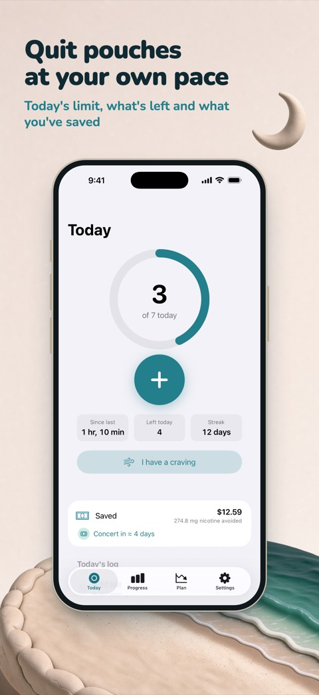
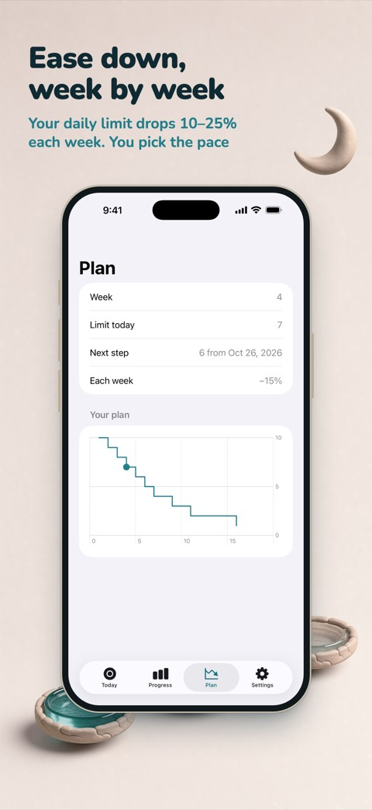
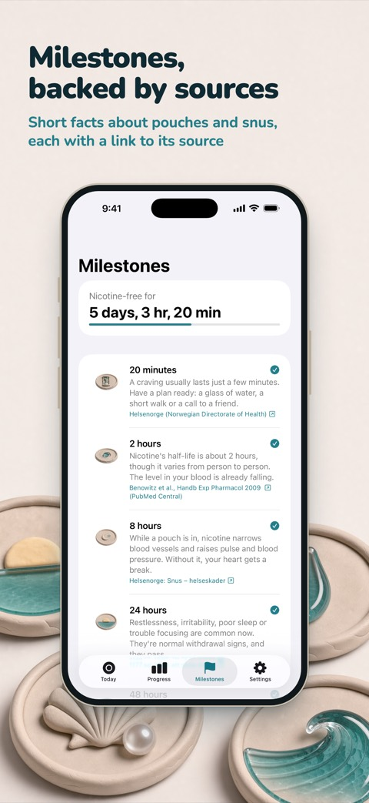

Quit nicotine pouches at your own pace
Ebb is an iPhone app for people who want to cut down or stop using nicotine pouches and snus. Log a pouch in one tap, follow a plan that eases down week by week, and watch the money you save turn into something you want.



Two ways to stop
Cut down. Tell Ebb how many pouches you use now. It sets a daily limit that eases down by 10–25% every week and shows what's left for today. Going over is noted, never punished. With Ebb Pro you can also step down by strength, for example 6 → 3 → 0 mg.
Quit now. A timer counts from your last pouch. Twelve milestones, from 20 minutes to a year, explain what is happening, each with a link to its source. See the withdrawal timeline.
Logging that takes a second
Log a pouch from the Home Screen or Lock Screen widget, from the Control Center button (iOS 18 or later), by asking Siri, or, with Ebb Pro, from your Apple Watch. When a craving hits, tap "I have a craving" for a 3-minute breathing exercise, note what set it off and count every craving you beat.
Money you can see
Ebb counts what you're no longer spending and turns it into dreams: a concert, new headphones, a trip. Enter a price and Ebb shows how soon your savings cover it at your pace. Ebb only counts; it never touches your money.
Facts, not scare stories
Every milestone comes from a public health service, a university or a scientific review, and it is about nicotine pouches and snus, not cigarettes. Ebb doesn't promise that your lungs will clear or your taste will come back, because those are findings about smoking.
Private by design
No account and no ads. Your entries stay on your iPhone, and with Ebb Pro they sync through your own iCloud. Anonymous usage statistics help improve the app, and you can turn them off in Settings. Read the Privacy Policy.
Free, and Pro if you want more
Free: unlimited logging, both modes, money saved, up to three dreams, all milestones, the small widget, Lock Screen widgets, Control Center, Siri and the breathing exercise. Ebb Pro adds your full history and insights, custom plans, Apple Watch, all widgets, iCloud sync and more. Pro is a yearly subscription or a one-time purchase; prices and terms are shown in the App Store.
Ebb is for adults 18+. It is not a medical app and does not give medical advice.